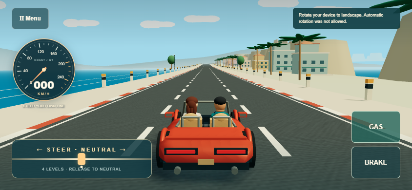
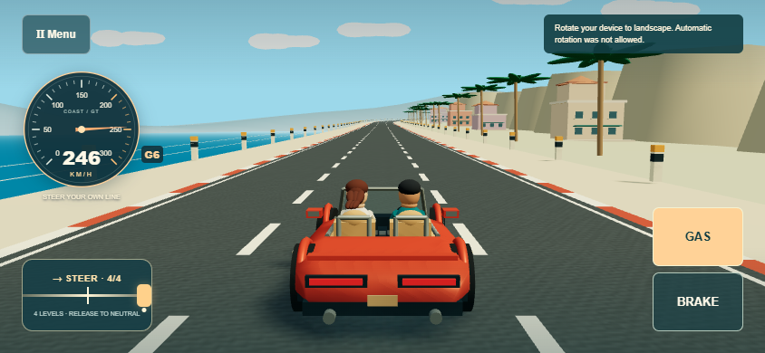

Actual rendered browser runs and separately captured WebAudio. All recordings use isolated test profiles. Real Pixel reach, hardware performance and sound comfort await your playtest.
Play L2 Lab · Free drive · Desktop trace · Audio signal measurements
The run starts from rest on the straight L2-001 road. The paired audio comes from the game's own WebAudio graph; no microphone is used.
| Speed | v0.7C | v0.7C.1 |
|---|---|---|
| 100 km/h | 1.62 s | 4.51 s |
| 200 km/h | 4.47 s | 10.71 s |
| 234 km/h | 6.07 s | 13.56 s |
| 300 km/h | Unattainable | 21.46 s |
Baseline v0.7C:
v0.7C.1:
These recordings have different acceleration curves; signal measurements do not establish subjective comfort.
Full active travel at 844×390: 286.95 → 144 CSS px. At 960×432: 336 → 144 CSS px. Both layouts retain all four levels per direction and independent GAS.

